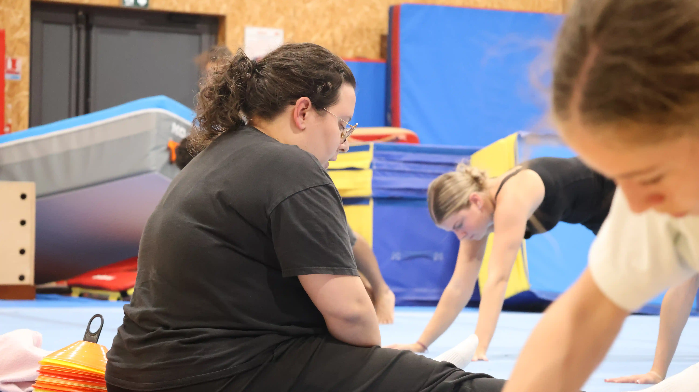
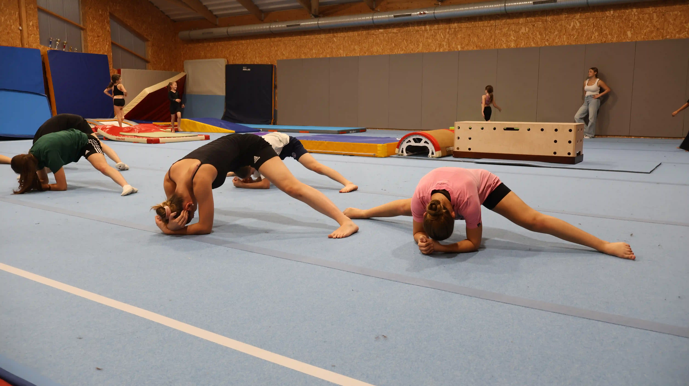
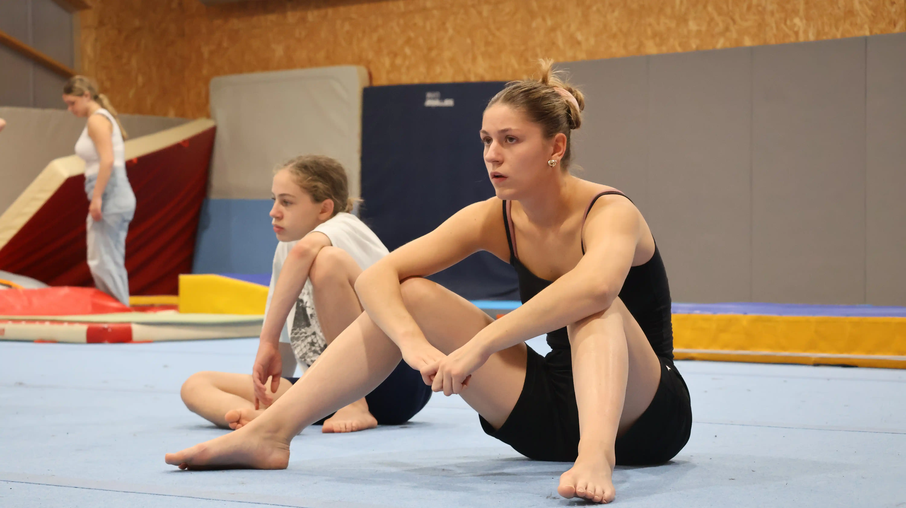
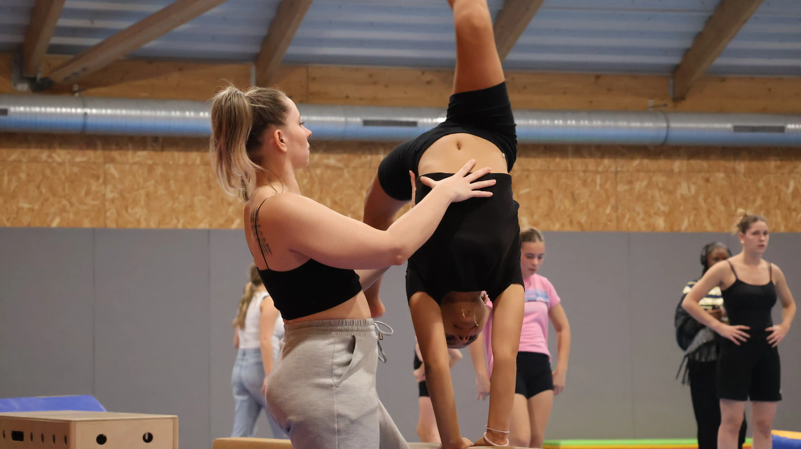
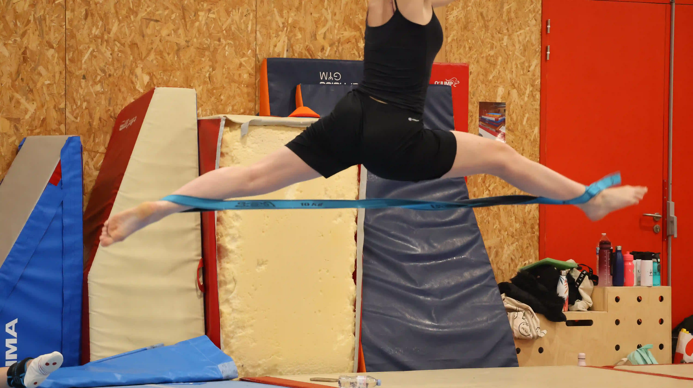
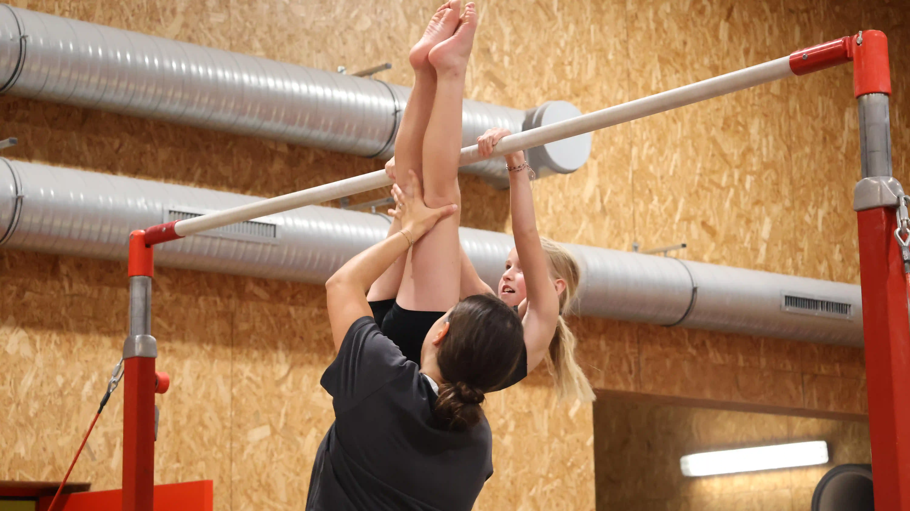
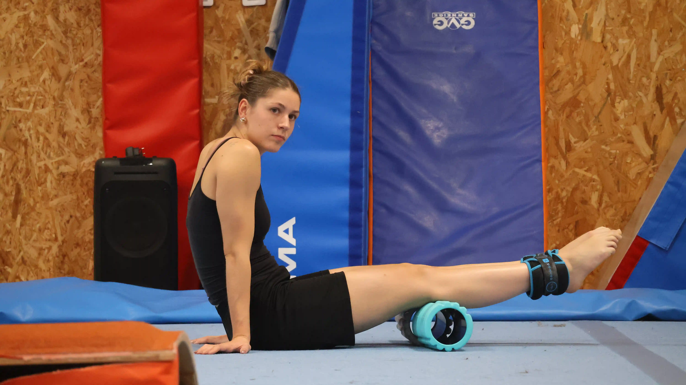
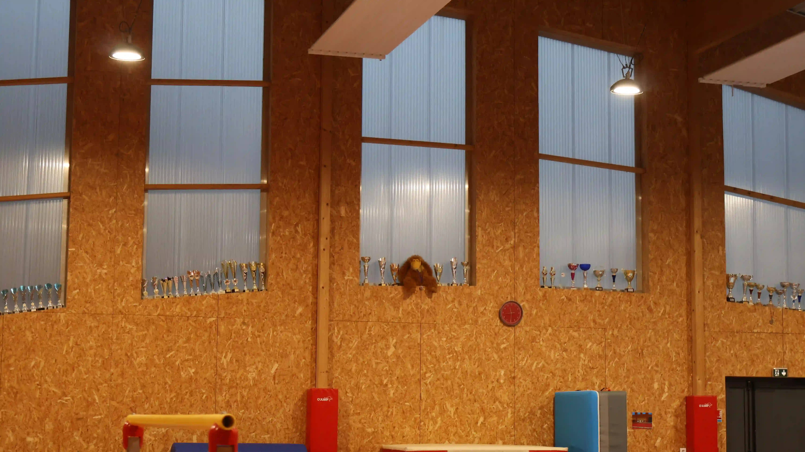
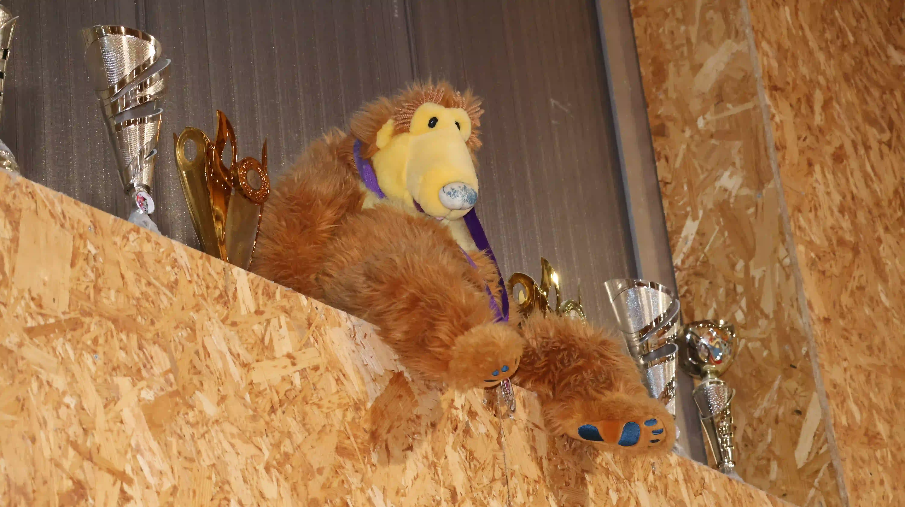
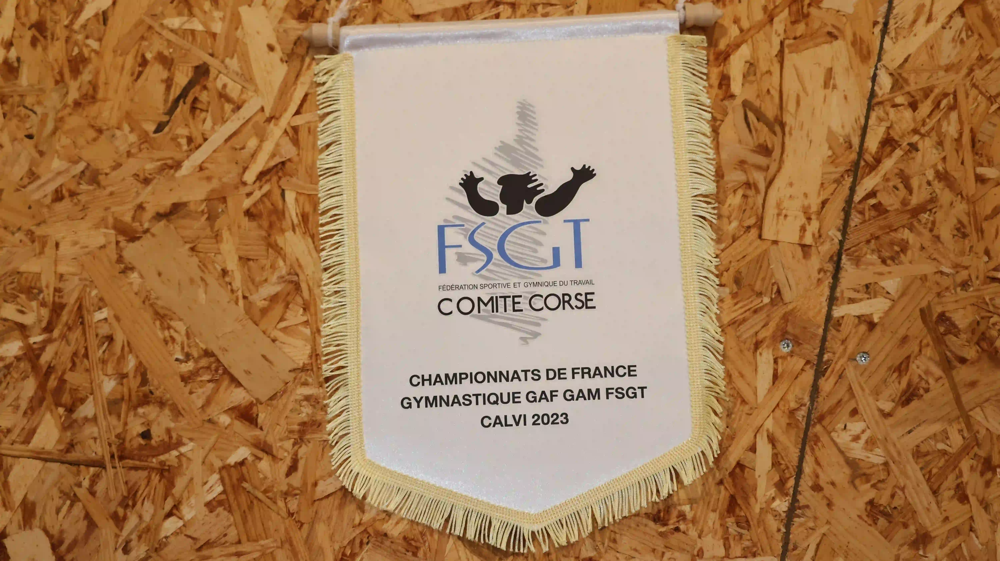

le corps parle quand les mots manquent
←
→
galerie











Au-delà des podiums et des compétitions, la gymnastique française se vit chaque jour dans les clubs, petits ou grands, où naissent les passions et se construisent les parcours.
Ce web-documentaire vous emmène à la rencontre de celles et ceux qui font battre le cœur de la gym :
entraîneurs, athlètes, bénévoles et licenciés.
Découvrez leurs histoires, leurs défis et leur engagement pour un sport d'équilibre, de précision et
d'émotion.